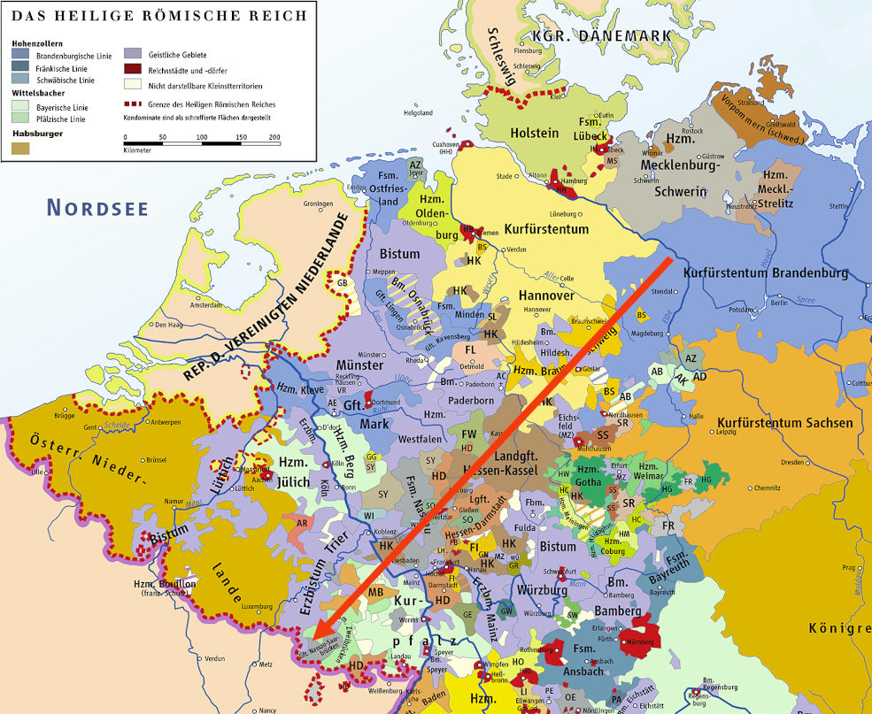

Das Fürstentum Nassau-Saarbrücken

Christophs Reise von Werben über Holland nach Neunkirchen
Wilkommen bei unserer Familie
Man fragt sich im Leben manchmal,
was der Sinn von all dem ist. Aber letzten Endes
ist es immer die Familie.
was der Sinn von all dem ist. Aber letzten Endes
ist es immer die Familie.
- Rod Stewart
Unser Vorfahre Christoph, geboren 1721, kam um die Mitte des 18. Jahrhunderts aus der alten Mark Brandenburg nach Neunkirchen. Von ihm stammen alle Neunkircher Schlessmanns ab.
Unsere Familie lebte, wie erwähnt, über etliche Generationen in Neunkirchen. Durch zunächst nur einige wenige Heiraten mit Frauen und Männern aus den alteingesessenen protestantischen Familien waren wir praktisch über Nacht mit allen Neunkirchern verwandt, da die "Ringverwandtschaft" eher die Norm als die Ausnahme war. Die Geschichte unserer Familie ist untrennbar mit der Geschichte Neunkirchens verbunden. Unsere Vorfahren konnten von einer Generation zur anderen beobachten, wie sich das beschauliche kleine Dörfchen im Fürstentum Nassau-Saarbrücken zu einer der größten Industriestädte des Saarlandes entwickelte.
Christians Familienchronik
Christian Schlessmann (1875-1958) verdanken wir die Informationen zu unseren Vorfahren in der Mark Brandenburg. Er reiste vor dem Zweiten Weltkrieg nach Werben und Wendemark, um Nachforschungen anzustellen und verfasste eine Familienchronik, von der nur noch Teile erhalten sind. Aus Christians Aufzeichnungen wird deutlich, dass er stolz auf seine Vorfahren war und seine Familie liebte.
Offensichtlich wollte er, dass alle Familienmitglieder die Chronik erhalten. Er forderte seine Leser auf, selbst nach Werben zu reisen und ging davon aus, dass weitere Nachforschungen folgen würden, um die Familiengeschichte zu vervollständigen. Geschrieben wurde die Chronik um das Jahr 1937, denn Christian erwähnt seinen "nunmehr 80-jährigen Onkel Jakob", der 1857 geboren wurde. Vermutlich schickte Christian seine Aufzeichnungen an mehrere oder sogar alle Familienmitglieder, die sich aber nicht dafür interessierten und sie nicht aufbewahrten. Ein Cousin von ihm, Johannes Friedrich Schlessmann (1904-1983), verfasste selbst eine sehr kurze Familiengeschichte, die auf Christians Chronik basiert. Zu seinen Brüdern hatte Christian nach dem Krieg keinen persönlichen Kontakt mehr. Nur mit seinem Bruder Friedrich hatte er gelegentlich noch beruflich zu tun. Seine Schwester Martha hatte jedoch eine Kopie der Familienchronik aufbewahrt. Diese gelangte nach Marthas Tod in die Hände von Christians jüngerem Bruder Wilhelm Schlessmann.
Wilhelm ergänzte die Aufzeichnungen und überreichte sie im Jahre 1974 seinem Sohn, meinem Vater Karl-Heinz. Ich konnte diese Version der Familiengeschichte in ihrer Gesamtheit lesen.
Wir sind die Vorfahren der Zukunft
Sich mit seinen Vorfahren zu beschäftigen, öffnet eine Tür in die Vergangenheit und eine Tür zu sich selbst. Ohne unsere Vorfahren wären wir nicht hier, und ein Teil von ihnen lebt in uns weiter. Zu wissen vorher man kommt, ändert das Selbstbild. Die Dinge verschieben sich. Plötzlich ist man nicht mehr die Person, für die man sich hielt, sondern wird sich darüber bewusst, Teil eines Gefüges von Menschen zu sein, mit seinem eigenen, ganz persönlichen Platz. Dies geht mit einer inneren Ruhe einher, von der man nicht einmal wusste, dass sie einem fehlte.Die Familie Schlessmann gehörte nicht zu den "einfachen Leuten". Unsere Vorfahren waren geschäftstüchtig, intelligent und gebildet und gehörten unweigerlich den "besseren Schichten" an. Sie hatten es nicht immer leicht, aber sie gaben auch nie auf. Ihre Geschichte ist voller Überraschungen, sie bringt einen zum Staunen und manchmal zum Weinen.
Und wer da meint, der Genealoge habe mit seinen Zahlen, Daten und Namen ein wenig anregendes, dürres Thema, der irrt erst recht, denn beim Zusammentragen dieser Ziffern und Namen entrollt sich ihm auch die Geschichte derer, deren Existenz ein Glied bildet in der langen Kette, und was der Genealoge zwischen den Zeilen liest, darum würde ihn mancher Dramatiker, mancher Romanschriftsteller beneiden.
- Graf Marcell Hochwald in "Die Rosen von Ravensberg" von Eufemia von Adlersfeld-Ballestrem
- Graf Marcell Hochwald in "Die Rosen von Ravensberg" von Eufemia von Adlersfeld-Ballestrem
Nun wollen wir sehen, wohin uns der Weg in die Vergangenheit führt.
» Zu Teil 1 Peter und Anna Schlessmann
Anfang
» Teil 1 Peter und Anna Schlessmann
» Teil 2 Christoph und Louisa Schlessmann
» Teil 3 Peter und Philippina Schlessmann
» Teil 4 Karl und Maria Schlessmann
Kontakt
Friederike Schneider (geb. Schlessmann)basehubb @ gmail.com